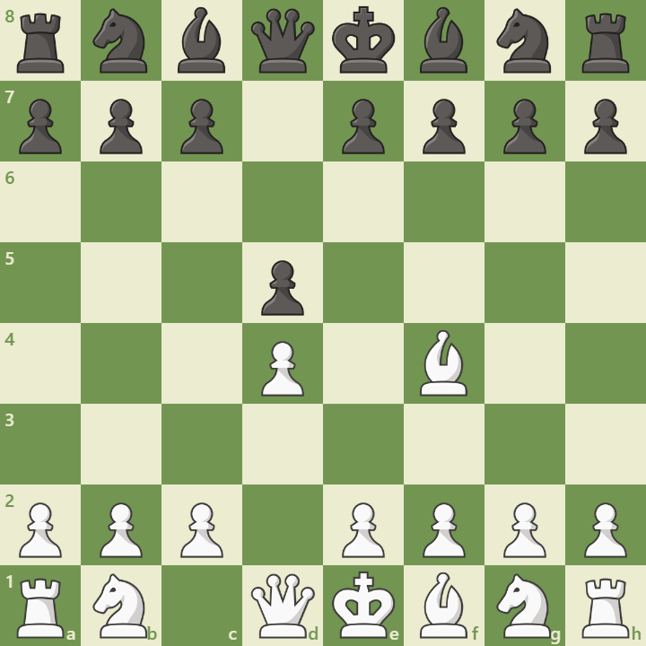

Overview
The London System is a solid and flexible opening for White that begins with the moves:
1. d4 d5 2. Bf4
It emphasizes a consistent setup over memorizing long lines. White aims for a pyramid of pawns with e3 and c3, while developing naturally and maintaining central control. It's popular at all levels for its reliability and simplicity.
Opening Diagram
This position arises after 1.d4 d5 2.Bf4. White develops the bishop outside the pawn chain early, preparing e3, Nf3, and c3 for a solid structure.
Main Variations
- Standard Setup: 1.d4 d5 2.Bf4 e3 Nf3 c3 Nbd2 – the classic pyramid structure.
- Accelerated London: 1.d4 Nf6 2.Bf4 – skips Nf3 to avoid certain defenses.
- Jobava London: 1.d4 d5 2.Nc3 Nf3 Bf4 – adds early pressure and tactical chances.
Strategic Themes
The London System emphasizes:
- Early bishop development outside the pawn chain
- Solid pawn pyramid with e3 and c3
- Minimal theory and consistent plans
- Flexibility against nearly any Black setup